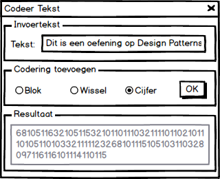

Tijdens dit labo maken we gebruik van pair programming. Bij pair programming werk je per 2 aan één toestel, waarbij elke persoon een andere rol heeft. Eén persoon is de uitvoerende programmeur (engels: driver) die de code schrijft. De andere persoon heeft een controlerende en vooruitdenkende taak (engels: observer), enerzijds ziet hij er op toe dat de programmeur geen fouten schrijft, anderzijds denkt hij al na over de toekomstige stappen.
Uiteraard is dit enkel van toepassing bij het implementeren van de code. Het ontwerp wordt door beide personen samen gemaakt. Bij het implementeren wissel je bovendien regelmatig van rol (bv. om de 10 minuten).
Het doel van deze opgave is om drie werkende programma's te ontwerpen gebruikmakend van één of meerdere design patterns en OO-ontwerpprincipes.
In de drie programma's kan de gebruiker een stuk tekst coderen met 3 verschillende coderingen. Bovendien kan de gebruiker coderingen combineren in een volgorde die hij zelf kiest.
De drie programma's worden uitgewerkt in aparte projecten (type Console Application en/of WPF application) binnen één solution. De gemeenschappelijke code (o.a. de coderingen) werk je uit in een Class Library project. Je oplossing moet voldoen aan een goede programmeerstijl, de OO-ontwerpprincipes en makkelijk uitbreidbaar zijn met nieuwe coderingen.
De implementatie van de coderingen werk je uit in een Class Library project. Voorzie drie coderingen:
Dit is een oefening op Design Patterns
-> iD tsie neo feneni gpoD segi naPttresnDit is een oefening op Design Patterns
-> 68105116321051153210110111032111101102101110105110103321111123268101115105103110328097116116101114110115| a | z | e | r | t | 1 |
| 2 | y | u | i | o | p |
| q | 3 | s | 4 | 8 | d |
| f | g | h | n | j | k |
| 9 | 7 | l | m | 6 | w |
| 5 | 0 | x | c | v | b |
Dit is een oefening op Design Patterns
-> 4pzvu4xzrhvyahrhni0gpob3seyngc21ttreh4Maak drie projecten, die telkens de Class Library gebruiken
CodeerZin
Het eerste programma CodeerZin vraagt twee gegevens aan de gebruiker:
Vervolgens schrijft het programma de gecodeerde zin uit.
De standaardcodering is cijfer. Dit betekent dat als de ingegeven codering niet herkend wordt, de cijfer- codering toegepast wordt. Het programma kan ook meerdere coderingen na elkaar uitvoeren. Hiervoor moet de gebruiker de gewenste coderingen ingeven gescheiden door een spatie.
Geef zin: Dit is een oefening op Design Patterns
Geef coderingen: blok cijfer wissel blok
5211ap2211tdwz52pazb2211rd3c11tdap97bzrddrbzrdbzbzqctd0311ap11q6ab11abzbpa11bzbz7q953cawwt11twdrbz113c52CodeerBestand
Het tweede programma CodeerBestand heeft als invoer drie strings:
Geef bestandsnaam voor invoer: testIn.txt
Geef bestandsnaam voor uitvoer: testUit.txt
Geef coderingen: blok wissel blok cijfer wisselDit programma maakt gebruik van dezelfde coderingen als het vorige programma en kan ook meerdere coderingen combineren. Voor het inlezen van een bestand is het eenvoudigst om een StreamReader te gebruiken. Het bestand wordt lijn per lijn gecodeerd.
CodeerGUI
Het derde programma CodeerGUI is gelijkaardig aan het eerste programma, maar maakt gebruik van een eenvoudige (WPF) GUI.
In de GUI (zie ook de mockup hieronder) kan een gebruiker de te coderen tekst invullen in de bovenste TextBox. Daarna kan de gebruiker verschillende coderingen toevoegen. Telkens een codering toegevoegd wordt, verschijnt het resultaat van de volledige codering in de onderste TextBox.

Mockup van de GUI
Dien het klassendiagram (of de klassendiagrammen) van het eerste puntje van de opgave in via de Minerva Dropbox - Reeks2.
Bij het indienen maak je 1 .pdf-bestand per twee studenten. De bestandsnaam bevat de naam van beide studenten, vb reeks02_Piet_Pieters_An_Jansens.pdf. Dit document bevat een afdrukbare versie van het klassediagram en bevat ook de naam van de beide studenten (moet mee afgedrukt worden). Eventueel kan je ook extra uitleg toevoegen op de .pdf
Per groep (2 personen) hoef je maar 1 keer in te dienen. Deadline voor indienen is zondag 6 oktober 23:59.
Voor het tekenen van UML diagrammen kan je gebruikmaken van Microsoft Visio of Visual Paradigm. Andere programma's mogen uiteraard ook gebruikt worden, maar volg wel de correcte UML notatie zoals beschreven in het handboek. De UML laten genereren door Visual Studio is echter niet toegelaten!Ontwerp, implementeer en test een eenvoudig systeem voor het weergeven van bestanden. Gebuik daarbij één of meerdere design patterns en OO-ontwerpprincipes.
Het bestandssysteem beperkt zich tot bestanden in één map (bv. C:\test\). Plaats in die map een aantal tekstbestanden (vb. file.txt en .secretfile.txt) en geef een inhoud aan de tekstbestanden.
Alle klassen die je nodig hebt voor het bestandsbeheer maak je in een aparte Class Library . In een Console Applicatie test je de werking uit (zie kader onderaan). Het systeem vraagt eerst de gebruikersnaam. Daarna kan de gebruiker de inhoud opvragen van verschillende (fysieke) bestanden die zich in één map (bv. C:\test\) bevinden (bladeren naar andere map wordt niet voorzien).
.secretfile.txt) kan enkel de administrator de inhoud opvragen.
Voorzie 2 gebruikers: een gewone gebruiker (gebruikersnaam user) en een administrator (gebruikersnaam admin). De gebruiker hoeft geen wachtwoord in te geven. Je hoeft zeker geen volledige authenticatiemodule te implementeren, het volstaat als je de twee gebruikers bijhoudt in een eenvoudige collectie.
Hieronder vind je een mogelijke output van het programma:
Enter username:
user
Enter file name or STOP to exit
file.txt
[INF] Loading file file.txt from disk...
====== file.txt ======
Contents of file.txt
============================
Enter file name or STOP to exit
file.txt
====== file.txt ======
Contents of file.txt
============================
Enter file name or STOP to exit
.secretfile.txt
[ERR] User 'user' has no access to this file.
Enter file name or STOP to exit
STOP
Merk in het bovenstaande voorbeeld op dat het bestand file.txt maar één keer ingeladen wordt van de harde schijf, terwijl de gebruiker de inhoud twee maal opvraagt. Het bestand .secretfile.txt wordt nooit ingeladen aangezien de huidige gebruiker geen administrator is.